Accueil
Bienvenue au Gîte Ô Nature - Varen (82330) - Tarn-et-Garonne
Gîte Ô Nature - Location de charme en pleine nature à proximité de Saint Antonin Noble Val
Un gîte au calme à proximité de Saint Antonin Noble Val


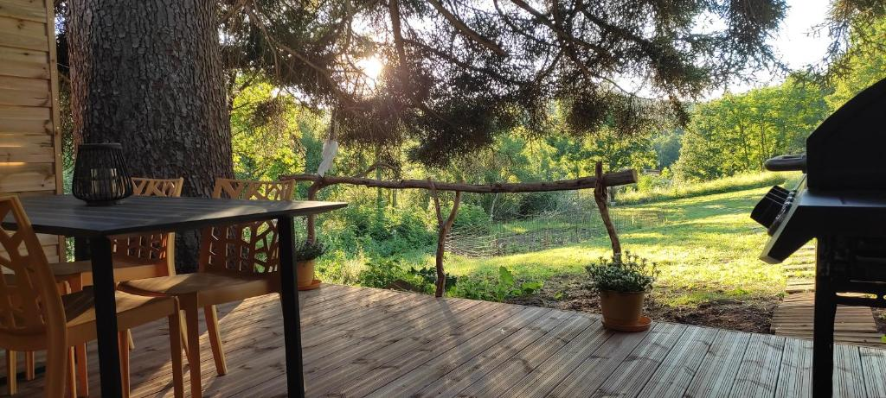
Profitez d’un séjour relaxant en pleine nature dans un gîte confortable, atypique et chaleureux,
idéal pour les couples, familles ou amis.
Pour un confort maximal, vous pourrez profiter de la climatisation en été et d'un poêle à bois l'hiver.
Votre Hôte vous accueille à partir de 17H. Le départ reste libre avant 12h.
Équipements et confort
Voici nos services - Varen (82330) - Tarn-et-Garonne
Gîte Ô Nature - Location de charme en pleine nature à proximité de Saint Antonin Noble Val
Le gîte
- Capacité : 2 à 4 personnes
- 2 chambres (lits 160 et 140)
- Draps, housse de couette et serviette de toilette fournie
- Salon confortable avec canapé convertible et poêle à bois
- Cuisine entièrement équipée
- Climatisation
- Réfrigérateur
- Lave vaisselle
- Poêle à bois
- Four à micro-ondes
- Cafetière Tassimo
- Bouilloire électrique
- Grille pain
- TV HD
- Wi-Fi gratuit
- Lit parapluie sur demande
- Produits de nettoyage
- Terrasse et jardin
- Mobilier extérieur
- Barbecue à gaz
- Parking privé
- Animaux acceptés
Intérieur
Extérieur
Animaux
A propos du logement
Le gîte "Ô Nature" est un hébergement atypique et confortable, aménagé dans une ancienne grange rénovée avec soin qui allie esprit traditionnel, modernité, confort et originalité.
Idéalement situé à seulement 10 minutes du magnifique village médiéval de Saint-Antonin-Noble-Val, cette cité emblématique blottie au creux de sa noble vallée, le gîte se trouve à la limite du Tarn et de l'Aveyron.
C'est le point de départ parfait pour un voyage à travers les époques, au cœur d'un écrin de verdure aux panoramas à couper le souffle.
Côté jardin et nature
Vous accédez à la propriété par un chemin privé menant à votre parking réservé. En traversant le jardin, vous découvrez une spacieuse terrasse en bois abritée par un majestueux sapin. .
Cet espace extérieur privatif est idéal pour admirer de merveilleux couchers de soleil et partager des grillades, le tout avec une vue imprenable sur le jardin, les collines et les chevaux vivant sur leur terrain boisé de 2 hectares.
Un intérieur chaleureux et équipé
À l'intérieur, le gîte se compose d'une belle pièce à vivre à l'ambiance cosy comprenant :
• Un salon confortable : pourvu d'un grand canapé d'angle convertible, d'une grande télévision à écran plat et d'un poêle à bois.
• Une cuisine ouverte moderne : entièrement neuve et équipée (lave-vaisselle, four à micro-ondes, réfrigérateur, cafetière Senseo ou Tassimo et grille-pain).
Un joli escalier central orné de branches de buis dessert l'étage, où vous disposez de deux chambres avec lit double (un lit en 160 et un lit en 140) ainsi que d'une salle d'eau fonctionnelle avec douche, meuble vasque et toilettes.
À la découverte de la région : villages et activités
Autour de votre hébergement, profitez d'une multitude de découvertes et d'activités de plein air :
• Cités médiévales pittoresques : explorez les ruelles historiques de Saint-Antonin-Noble-Val, mais aussi les villages perchés et bastides incontournables des environs tels que Cordes-sur-Ciel, Bruniquel, Penne, Najac ou Caylus.
• Activités de nature et de loisirs : profitez de la proximité des Gorges de l'Aveyron pour pratiquer le canoë-kayak, la randonnée pédestre et equestre, le VTT et l'escalade.
• Ne manquez pas non plus les célèbres marchés de producteurs locaux pour goûter aux saveurs du terroir.
Contact et Réservation
Contactez-nous ici.
Gîte Ô Nature - Location de charme en pleine nature à proximité de Saint Antonin Noble Val
Réserver votre séjour
Varen (82330) - Tarn-et-Garonne
Adresse : 230 Route de Laumière, 82330 Varen
Email : gite.onature@gmail.com
Téléphone : 06 87 10 51 30
Photos
Gîte Ô Nature - Location de charme en pleine nature à proximité de Saint Antonin Noble Val
Galerie photos

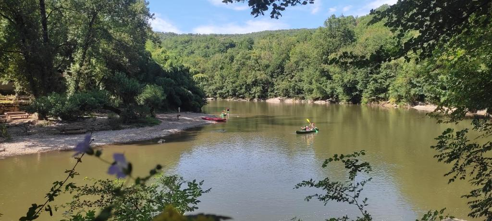
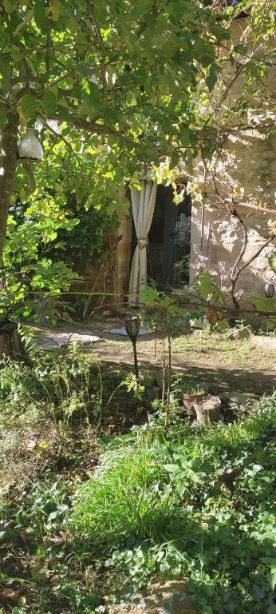
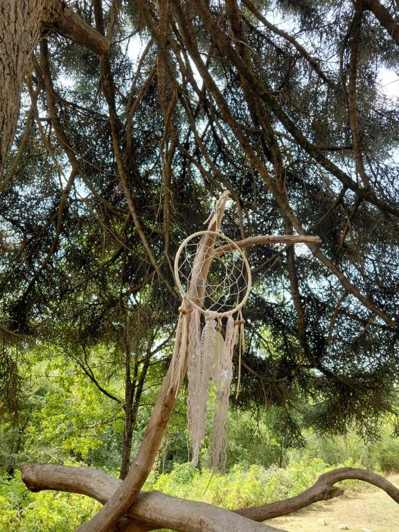
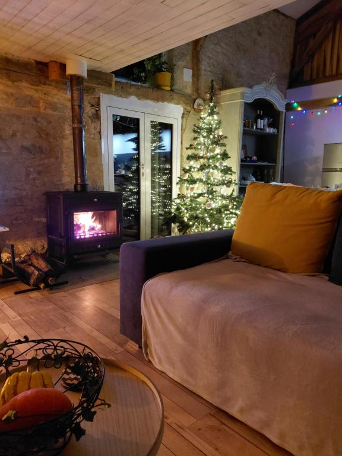
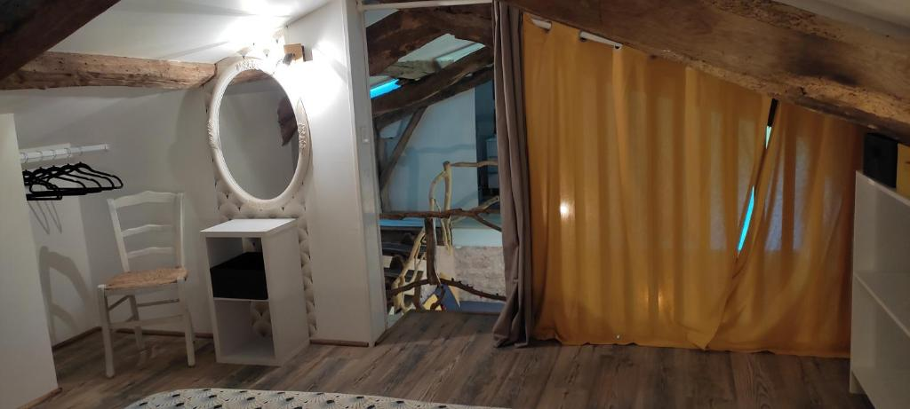
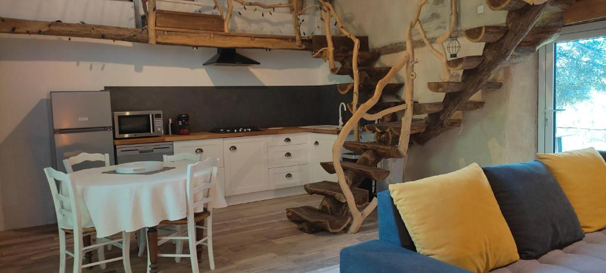
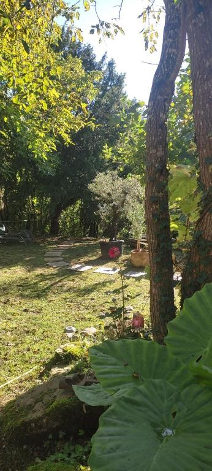
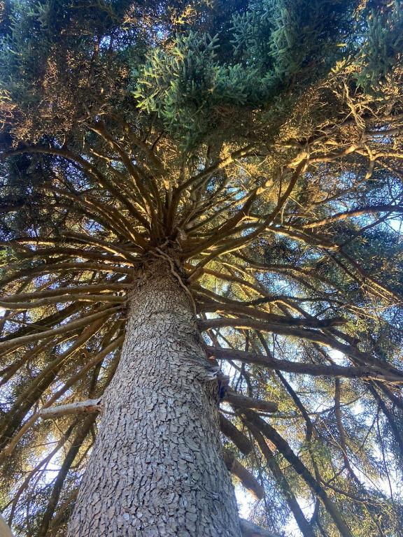
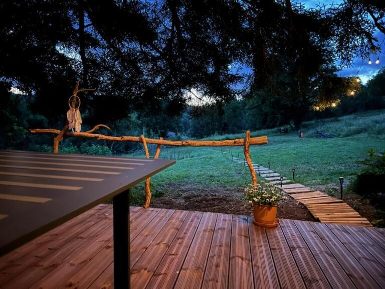
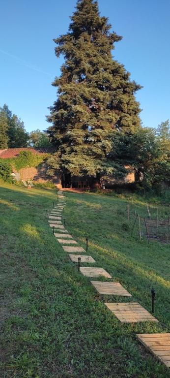